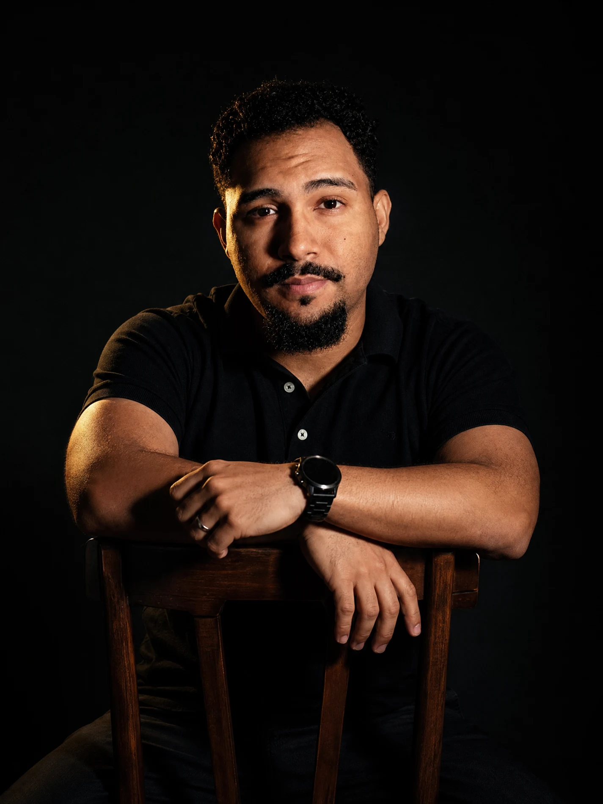
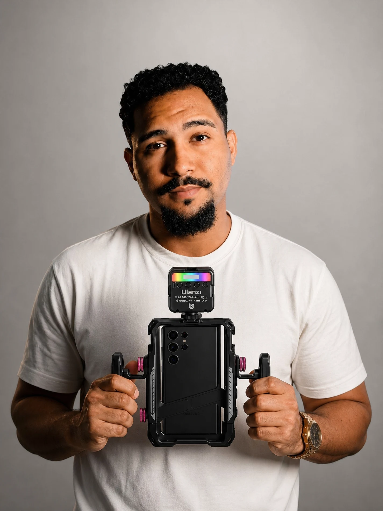
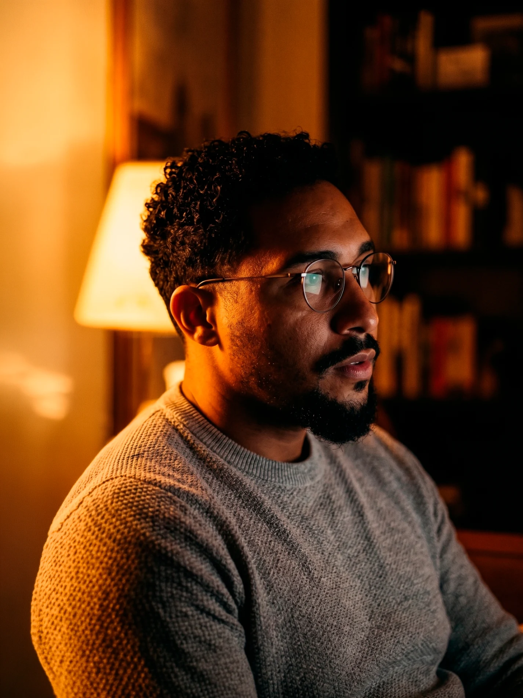
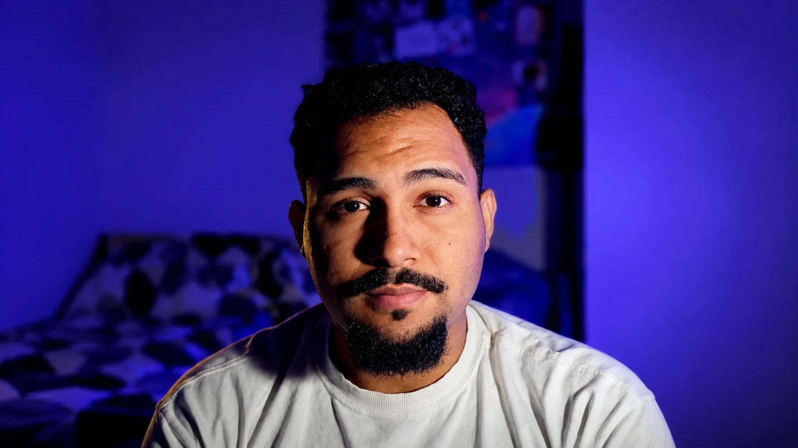
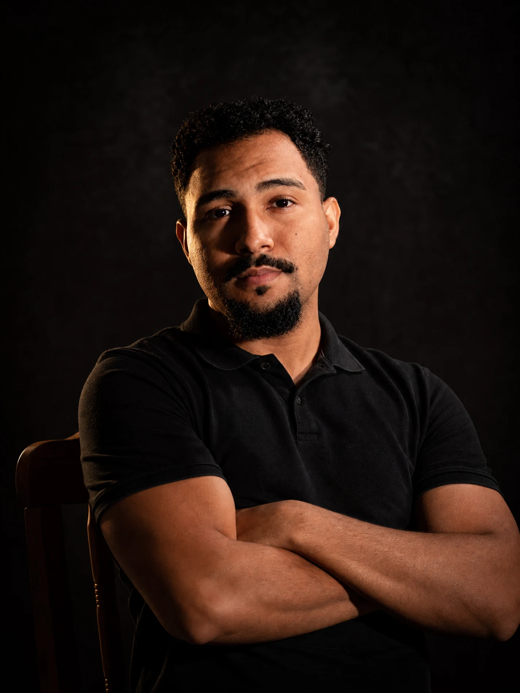

DAVIAYRES.
PARA A SUA MARCA.
Transformo ideias em design.
E histórias em movimento.
VOL. 01 / 2026
Ideias que
ganham forma.
Nenhum projeto nesta categoria por enquanto.

DO PRIMEIRO OLHAR AO ÚLTIMO FRAME.PRAZER, EU SOU O DAVI.
Um olhar atento.
Muitas maneiras
de criar.
Sou designer gráfico e produtor audiovisual em Rio Claro, SP. Meu trabalho conecta identidade, conteúdo e movimento para dar forma ao que cada marca tem de próprio.
Da primeira ideia à entrega, gosto de estar perto de todo o processo: pensar o conceito, desenhar, captar e editar. É nesse encontro entre estratégia e criação que meu trabalho acontece.


Mais do que conteúdo,
crio conexões
Pensar.
Criar.
Conectar.
01 Design & identidade +
Identidades visuais, marcas, peças gráficas e materiais que traduzem a personalidade de um negócio em um sistema visual consistente.
02 Conteúdo para marcas +
Posts, carrosséis, campanhas e conteúdos para redes sociais. Da ideia à composição, com clareza e intenção em cada peça.
03 Audiovisual & movimento +
Roteiro, captação e edição de vídeos. Histórias de marca, produtos, bastidores e reels com atenção ao ritmo e à narrativa.
04 Experiências digitais +
Sites e landing pages que organizam conteúdo, apresentam marcas e criam uma experiência visual cuidadosa em cada tela.

Tem uma ideia?
Vamos dar
vida a ela.↗
Me conte o que você tem em mente.
O próximo projeto começa com uma conversa.
Também faço
parte da

.Na Bow Studio, somo meu trabalho a outras visões para construir projetos que conectam design, comunicação e estratégia.
Conheça a agência ↗
ARRASTE PARA EXPLORAR ↔